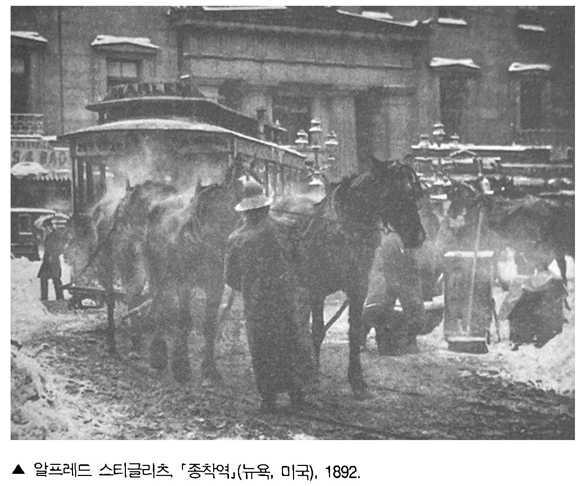
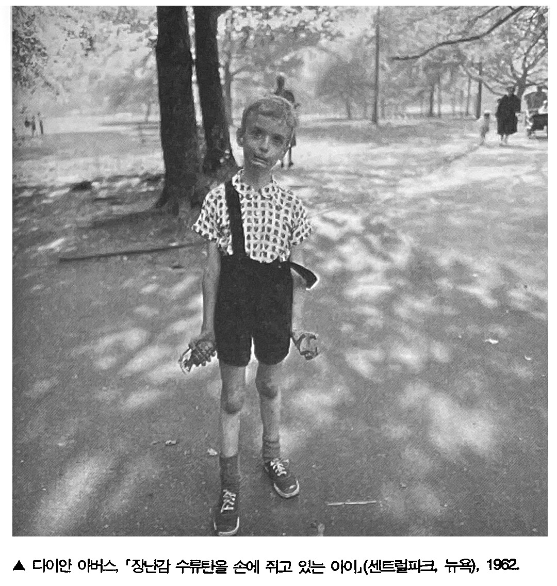

사진이 등장한 초창기에는 사진이 이상화된 이미지가 될 것이라고 예견했다. 대부분의 아마추어 사진작가들은 아직까지도 이런 목적을 쫒는데, 이런 사람들에게는 여인이나 석양처럼 아름다은 무엇인가를 찍은 사진이 곧 아름다운 사진이다. 1915년 에드워드 스타이켄은 어떤 건물의 화재 비상구에 놓인 우유병을 찍었는데, 이 사진은 전혀 다른 개념의 아름다운 사진을 보여준 초창기 사례이다. 그리고 일군의 야심만만한 전문가들은 1920년대부터 서장적인 피사체를 점점 멀리 하면서, 평이하며 속되고 따분한 제재에 천착하기 시작했다.(오늘날 이들의 작품은 박물관에 소장되어 있다)

룩셈부르크 태생의 미국 사진작가 스타이켄이 찍은 이 사진은 당대의 사진계를 지배하던 '회화적 사진'에 반발해 "꾸미지 말고 솔직하게 작업할 것"을 천명한 '순수 사진Straight Photography'의 대표작이다. 스타이켄은 제2차 대전이 끝난 뒤인 1947년 뉴욕 현대미술관 창립 25주년 기념행사로 기획한[인간가족전]을 통해서 사진을 '만국의 언어'이자 '시각적 국제어Visul Esperanto'로 인식시키는 데 기여하기도 했다.
1839년 사진이 발명된 이래로 사진은 인물 사진 같이 실용적 목적을 가진 기록 사진, 그리고 창조적인 표현을 지향한 예술 사진, 이렇게 두 갈래로 갈라져 있었다. 이 두 갈래는 '순수 사진'을 주장한 스티글리츠라는 인물의 등장 이후에야 서로 통합될 가능성을 볼 수 있었다. 사진만의 광학적 속성과 기계적 기록성을 최대한 사용해(회화적 사진처럼) 인공적이지 않고, 기록 사진처럼 사진 작가 고유의 내면세계를 부정하지도 않는 작품을 선보였던 그는 '사진의 독자적 예술성'을 구축햇다는 평가를 받으며 한 시대를 풍미했다.
드러내놓고 "이상해 보이는" 사람들을 찍는 데에만 관심을 가졌던 아버스는 자신이 살던 집 근처에서 수많은 제재를 찾았다. 아버스는 이렇게 말한다. "거리에서 사람을 볼 때 제일 먼저 눈에 들어오는 것은 주로 그 사람의 약점이다." 자신이 다뤘던 것과 상당히 다른 피사체를 찍을 때에도 아버스는 일관된 공통점을 보여 줬다. 그녀가 사진에 담은 인물들은 나체주의자처럼 옷을 입지 않았거나, 나체촌에서 앞치마를 두르고 있는 웨이트리스처럼 옷을 입었기 때문에 기묘해 보인다. 아버스의 사진이 뛰어난 이유는 사진 속의 피사체가 우리의 감정을 갈기갈기 찢어놓는 듯한 데 반해 그 분위기는 냉정하고 무미건조할 만큼 정중하기 때문이다. 아버스는 괴짜와 부랑자를 쭉 염탐하다가 몰래 사진을 찍기는 커녕, 자신의 존재를 알리고 허락을 받은 뒤 사진을 찍었다. 줄리아 마가렛 카메론을 위해서 스튜디오에 얌전히 앉아 줬던 빅토리아 시대의 유명인사들처럼, 아버스의 피사차체가 된 사람들이 그녀를 위해서 조용히 뻣뻣하게 자세을 취해준 것도 바로 그래서였다. 비정상적인 괴짜를 찍은 그녀의 사진은 그사람의 고통보다는 그 사람의 초연함과 자립성을 강조하고 있다.
아버스는 이렇게 쓴 바 있다. "사진이란 원하는 곳이면 어디든 갈 수 있고, 원하는 것이면 무엇이든 할 수 있게 해주는 일종의 허가증이다." 카메라는 사진을 찍은 사람이 사진에 찍히는 사람에게 아무런 책임도 지지 않은 채, 도덕적 한계와 사회적 금기를 넘나들 수 있게 해주는 일종의 여권이다. 그 사람의 삶에 끼어드는 것이 아니라 방문하는 것, 바로그것이 누군가의 사진을 찍는다는 것의 핵심이다.
1. Memento Mori. "죽음을 기억하라"라는 뜻의 라틴어. 죽음의 필연성을 되새겨주는 징표(가령 해골)을 뜻하기도 한다.
2. rayogram과 solarization은 미국 사진작가 만 레이가 각각 1922년과 1929년 선보인 기법이다. 레이요그램은 카메라를 사용하지 않고 인화지 위헤 물체를 얹은 뒤 직접 빛을 비추어 추상적인 이미지를 만드는 기법이며 (흔히 '포토그램이라고도 불린다), 솔라리제이션은 필름이나 인하지를 (현상중에 재차 빛을 비추는 식으로) 빛에 과다 노출시켜 명암이 반전된 채 동시에 나타나도록 만드는 기법이다.
3. Flaneur 1863년 보들레르가 '피가로 Le figaro'에 기고한 글('현대의 화가 Le peintre de la vie moderne')에서 처음 쓴 말 원래는 한가로이 거닐거나 빈둥거리는 사람을 뜻하는데, 보들레르는 별다른 목적없이 대도시의 군중사이를 배회하며 관찰하는 인물이라는 뜻으로 사용했다. 그의 표현을 빌리면 "열정적인 구경꾼"이자 "군중과 한 몸이 되려고 하는" 만보객은 "현대 화가[예술가]의 화신"이다.
4. Cretin. 알프스 산지의 풍토병으로 불구와 백치 증세를 보인다.
5. '음-양화기법negative-positive process'이란 감광유제를 바른 종이를 네거티브 필름처럼 만들어 다른 감광지에 인화하는 방식으로서 (이 기법으로 제작된 사진이 바로 칼로타입이다), 네거티브 필름처럼 쓰일 감광지에 '잠상 latent image'을 맺게 한 뒤 현상 과정에서 이를 나타나게 하는 방식이었다. 그러나 '직접양화기법Positif direct'을 쓴 다게르의 다게레오타입은 감광유제를 바른 은판에 곧바로 상이 맺히게 해서 만드는 사진이었다. 따라서 음-양화기법은 피사체를 장시간 똑같은 자세로 세워둘 필요도 없을뿐더러, 똑같은 사진을 여러 장 복제할 수도 있었다.
6. Hard-edge. 1950년 말, 당시 미국 화단의 주류였던 추상표현주의에 반대해 대두된 기하학적 추상화의 일종. 윤곽이 뚜렷한 도형과 선명한 색깔로 화목 전체를 가득 채우는 방식을 썼다. 추상표현주의 화가 뉴먼Barnett Newman, 1905~1970과 로스코Mark Rothko, 1902~1970의 후기 작품도 이런 경향을 띠고 있다.
7. 손택은 블레이크(William Blake, 1757~1827)의 시 '천국과 지옥의 결혼 The Marriage of Heaven and Hell'(1792)의 한구절, 특히 14번째 도판(블레이크는 손수만든 채색 도판에 시를 쓰곤 했다)에 적힌 "지각의 문(감각)이 깨끗이 정화되면 모든 것이 있는 그대로 보이리라. 무한 그 자체로"를 염두에 둔 듯하다.
8. '기상 conceit'이란 도저히 어울리지 않는 상이한 두 사물에서 공통점을 발견해 둘 사이에 유사성을 확립하는 비유법이다. 이 기법의 대가인 영국 시인 던(John Donne, 1572~1631)은 '좋은 아침 The Good-Morrow'(1631)이란 시에서 한 쌍의 연인을 '두 반구半球'에 비유하는 등 지리적 심상을 많이 썼다.
9. '월든 Walden'은 매사추세츠 주의 콩코드에 있는 호숫가로서 소로우(Henry David Thoreau, 1817~1862)의 저서 '월든: 숲 속의 생활 Walden, or Life in the Woods'(1854)을 통해서 유명해졌다. 이 저서에서 월든은 자연의 이상적인 모습을 그대로 간직한 장소로 묘사되고 있다.
10. Lettre a Jane. 1972년 고다르가 자신의 동료 고랭(Jean-Poerre Gorin, 1943~ )과 함께 제작한 다큐멘터리. 일련의 스틸 사진과 내레이션만으로 이뤄진 작품으로서, 한창 전쟁 중이던 북베트남의 하노이를 방문해서 반전 여설을 한 미국 여배우 폰다(Jane Fonda, 1937~ )를 비판해 큰 논란을 일으킨 작품이기도 한다. 고다르와 고랭은 폰다가 '렉스프레스'에 실린 사진에서도 자신의 사회적 역할(배우로서의 역할)에 충실했을 뿐이며, 그렇기 때문에 베트남인들의 투쟁을 대하는 서구인들의 전형적 태도-- 특히 '부르조아적 도략'으로서의 사회적 참여를 반복했을 뿐이라고(즉, 폰다의 행동은 '충분히' 혁명적이지 못했다고) 비판했다. 고다르와 고랭은 영화의 내레이션 일부를 정리해 발표하기도 했다.
11. '회화적pictorial'이라는 단어는 원래 긍정적인 뜻으로 쓰였다. 19세기 유명 예술 사진작가 로빈슨이 자신의 저서 "사진에서의 회화적 효과 pictorial Effect in Photography"(1869)를 통해서 그런 뜻을 널리 알렸다. 애벗은 "기로에 선 사진 Phitography in Crossroads"(1951)이라는 글에서 "로빈슨의 방법론은 모든 것을 실제보다 더 아름답게 보이게 만든다"고 주장했다. 애벗은 나다르ㆍ브래디ㆍ앗제ㆍ하인 등을 사진-기록의 대가로서 높이 평가한 반면, "주관성이 철철 넘치는……극도로 회화적인" 사진을 찍어대는 학파의 창시자이자 로빈슨의 후계자라며 스티글리츠를 혹평했다.
12. 손택이 말한 모홀리-나기의 에세이는 '시각의 새로운 도구'이다. 모홀리-나기가 언급한 여덟가지의 바라보기 방식에 대응하는 사진의 형태는 (언급된 순서대로) 포토그램, 르포르타주, 스냅 사진, 장시간 노출, 적외선 사진, 방사선 사진, 포토몽타주, 빛의 굴절이나 네거티브의 상태를 인위적으로 조작해 만든 사진이다.
13. 유미주의의 대표자로 알려진 와일드(Oscar Wilde, 1854~1900)는 '거짓말하기의 쇠퇴'(1889)라는 글에서 "우리가 해야 할 일, 무슨 대가를 치르더라도 꼭 해야 할 일은 옛날의 거짓말 기술을 되살리는 것이다"라고 말하며 '예술로서의 거짓말'이라는 예술론을 제시했다. 그의 주장에 따르면 '훌륭한 거짓말'이야말로 태곳적 이래로 예술위 본질이었으며, 그렇기 때문에 이 본질에서 벗어난 채 "단조로운 사실을 숭배하는 우리의 기괴한 풍조"(여기서 그는 당대의 문학계를 지배한 리얼리즘과 자연주의를 염두에 둔 듯하다)는 "예술을 빈곤해지게 만들 뿐만 아니라, 아름다움이 세상에서 자취를 감추게 만들 것"이었다. Oscar Wilde, "The Decay of Lying," Intentions, London: Methuen, 1891.
14. 물론 사진이 내세운 주장이 훨씬 더 오래됐다. 오늘날 우리에게 익숙해진 행위, 그러니까 구성 대신 우연한 마주침을, 구상(또는 제작) 대신 발견된 오브제나 상황을, 노력보다는 결정을 활용하는 행위의 원형은 기계를 매개로 사진이 선보인 일종의 즉석 행위(기술)이다. 그리고 예술작품이 일종의 임신이나 출산이 아니라 불라인드 데이트를 통해서도 제작될 수 있다는 생각을 맨 처음 퍼뜨린 것도 사진이다 (뒤샹의 '랑데뷰' 이론을 보라). 그렇지만 이미 확고히 자리잡은 순수예술계에서 뒤샹의 영향을 사람들보다는 전문 사진작가들의 입지가 훨씬 더 불안정해 보인다. 전문 사진작가들은 서둘러 이렇게 말하곤 한다. 재빨리[사진을 찍을지 말지] 결정할 수 있으려면 자신의 감수성과 눈썰미를 오랫동안 단련시켜야 한다고. 그들은 이렇게도 주장한다. 사진을 찍는 것[가령 셔터를 누르는것] 자체는 쉽지만, 그렇다고 해서 사진작가가 화가보다 이런저런 노력을 덜 하는 것은 아니라고.
15. The quality of presence. 손택이 본문에서 언급하고 있는 '영기'란 벤야민의 '아우라Aura'개념을 염두에 둔 것이다. 벤야민은 라틴어로 '숨결' '흔적으로서의 상' '죽지 안은 영혼' '영적인 기운' 등을 뜨하는 아우라 개념을 통해서 대량생산ㆍ 대량복제가 가능해진 오늘날 예술에서 일어나게 된 변화를 추적하고 있다. 벤야민의 말에 따르면, 아우라는 예술 작품이 지닌 고유한 본질(혹은 예술 작품이 자아내는 그 특유의 분위기) 같은 것으로서 무엇보다도 예술적 경험을 가능게 해주는 조건이라는 점에서 중요하다. 그런데 벤야민은 이 아우라 개념을 '유일한 원본; 개념과 결부시킨다. 즉 원본만이 아우라를 지닐 수 있다고 본 것이다. 따라서 사진이나 영화 같이 원본 개념 자체가 희미해지는 예술 작품은 아우라를 지닐 수 없다. 벤야민이 기계를 통한 복제나 재생산이 가능해진 오늘날의 예술 작품에 일어난 결정적 변화로 '아우라의 붕괴'를 꼽은 이유도 바로 이 때문이다. 손택은 본문에서 벤야민의 이런 아우라 개념을 '우호적'으로 비판하고 있다. 발터 벤야민, 반성완 옮김, '기술복제 시대의 예술 작품'(1934), '발터벤야민의 문예 이론, 민음사, 1983.
16. Walter Pater, "The School of Giogione," Studies in the History of the Renuissane, London Macmillan, 1873, p.135
17. 프랑스의 전방위 예술가 콕토(Jean Cocteau, 1889~1963)가 1929년 발표한 소설. 일찍 부모를 잃고 부자인 숙부 집에서 기거하게 되는 주인공 오누이 엘리자베스와 폴을 통해서 죽음의 암울함이 지배하는 부조리한 세계를 보여주는 작품이다. 두 오누이 사이에 이들처럼 고아인 또 다른 소년과 소녀가 동숙하게 되면서, 누이와 남동생간에는 애증으로 인한 갈등이 생겨 동생은 누이의 책략으로 독약을 먹게 되고, 누이는 권총 자살한다.
[참고문헌]
사진에 관하여 On Photography, 수잔 손탁, 이재원 옮김, 도서출판 이후, 2002. 9.9
....
....
....
....
....
....